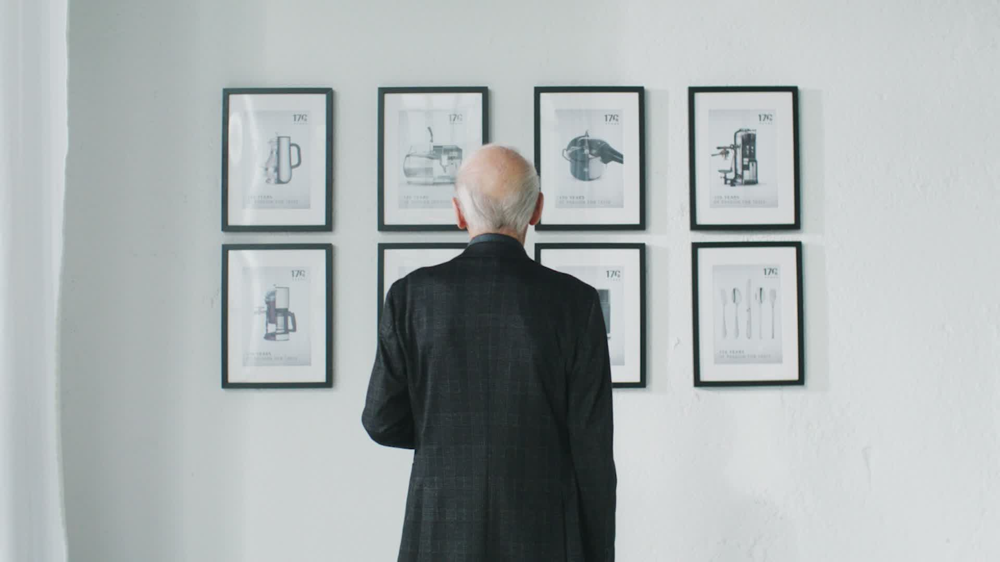
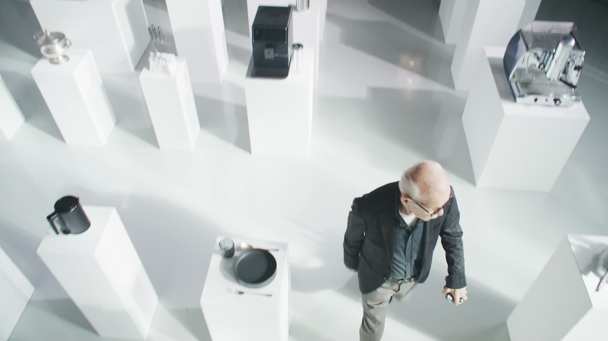
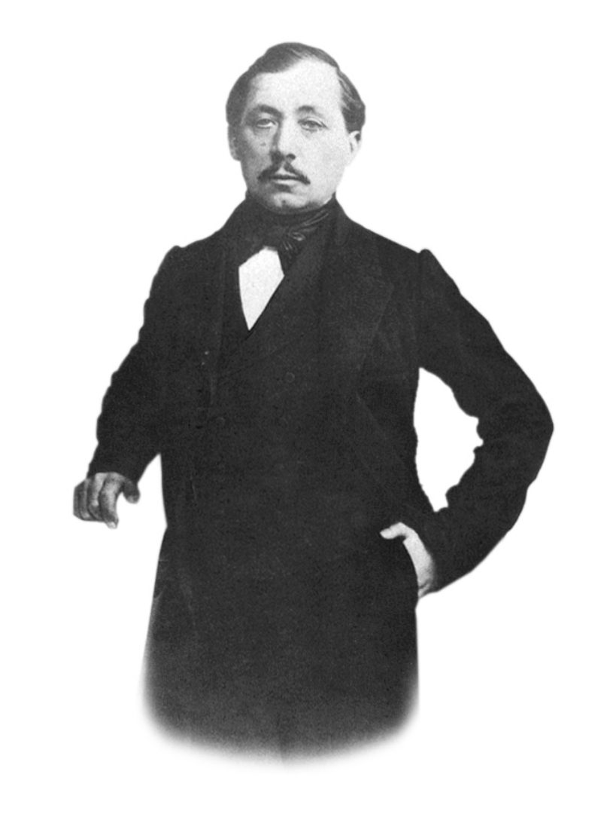
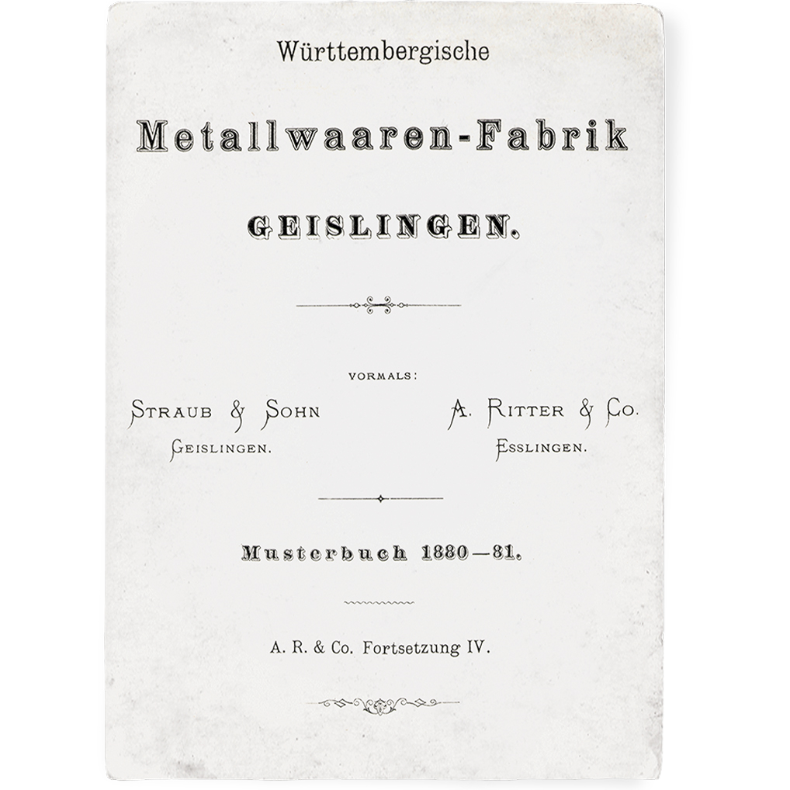
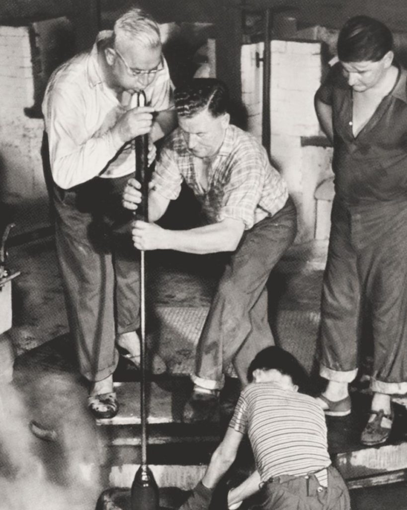
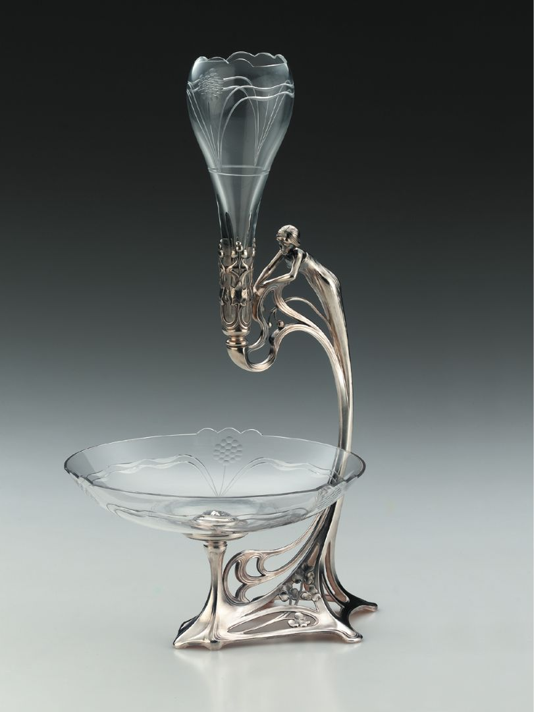
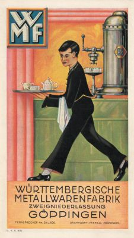
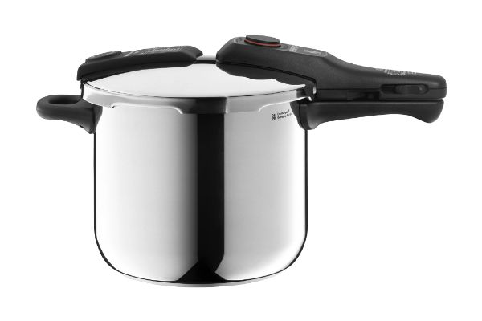
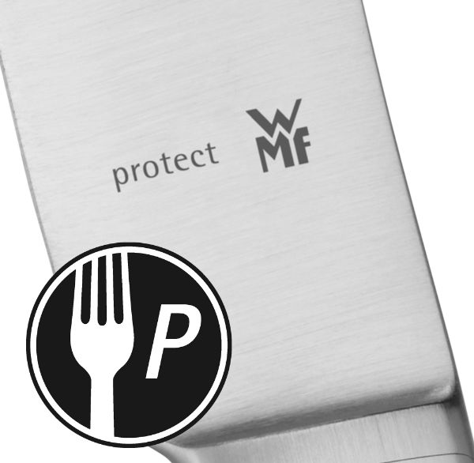

PROTOTYPE v1 (chronological, superseded by v2) · proposed page wmf.com/de/en/our-story.html (DE: /de/de/unsere-geschichte.html) · built only from live wmf.com PageBuilder modulesRead the research and rationale →
Film: WMF heritage campaign 2023, shot in the WMF museum collection
Why: every benchmark opens with a "Since YYYY" lockup (Rimowa "SEIT 1898", Fissler, Alessi). Research links "since/established" cues to higher perceived quality and willingness to pay (Baumert & de Obesso 2021; Pecot et al. 2018). Reuses the homepage's existing "SINCE 1853 / TASTE MATTERS" line, which today links nowhere. Asset: 26-second loop cut from the 2023 heritage film, chosen to avoid its "170 years" shots (WMF museum, Heinz Scheiffele); poster frame for reduced motion. A11y: muted, visible pause button (WCAG 2.2.2), no autoplay under prefers-reduced-motion. No year count in copy: avoids the stale "170 years" banner problem.
02 · Text · Centered (wmf Text row)
Taste matters
WMF was founded in 1853 in Geislingen an der Steige, when mill owner Daniel Straub and the brothers Friedrich and Louis Schweizer opened a metalware works with 16 employees. In 1880 it became the Württembergische Metallwarenfabrik, the name behind the three letters.
Today WMF makes cookware, cutlery, kitchen tools and coffee machines for homes, restaurants and hotels, and has been part of Groupe SEB since 2016. The idea has stayed the same: metal, designed with care and made for everyday use. Inspired by professionals. Designed for home.
Why: NN/g About-Us guideline: a scannable 1–2 paragraph summary at the top that says who, where, since when and who owns the company. It also answers the top search questions ("wann wurde WMF gegründet", "wofür steht WMF", "wer gehört WMF") in quotable sentences for search and AI answers. Sources: aboutwmf.com/en/history (founding, 16 employees, 1880, 2016). Brand line from the WMF brand book.
The works opened at the foot of the Geislinger Steige railway incline, which Daniel Straub had helped to build.

≈ 800
Patents
From the first WMF pressure cooker in 1927 to today's coffee machines, engineering has always been part of the work.

11,000
Pieces in the archive
The WMF product archive was declared a cultural monument by the state of Baden-Württemberg in 2019.
Why: Mauviel's stat strip is the most scannable opener in the benchmark; WMF can build it from the existing Highlights module with no new component. Sources: founding and Geislinger Steige (aboutwmf.com/en/history); "rund 800 Patente" (aboutwmf.com 170-years story, 2023); archive 2019 (aboutwmf.com/en/history; the 11,000 figure comes from the corporate archive section). Check: refresh the patent figure with Legal/R&D before launch.
Why: NN/g: vertical scrolling gets about 20× more attention than horizontal, and scroll-jacking disorients users, so the timeline runs vertically and the chips act as a jump bar (Miele, Villeroy & Boch, Robbe & Berking). Five chapters, each with one hero story and three milestones, instead of the ~45 equal entries on aboutwmf.com. Build: the live Sub Navigation module plus Anchor rows; stickiness is a small CSS addition. It must not cover keyboard focus (WCAG 2.4.11), so scroll-padding-top is set.
Anchor · era-185305 · Text + Image · Image left

Daniel Straub, founder
Chapter 11853–1926
From Geislingen to the world
Daniel Straub was a mill owner and engineer. The Schweizer brothers were skilled metal spinners. Together they founded Metallwarenfabrik Straub & Schweizer and showed their brass and copper goods at the Munich Industrial Exhibition a year later.
Medals followed at the London exhibition of 1862. In 1868 the first store opened in Berlin, and in 1880 a merger with Ritter & Co. of Esslingen created the Württembergische Metallwarenfabrik.
“Even as a child I loved to build things and made models of the water wheels and mills of my father.”Daniel Straub
Why: Baymard: the origin story and the founders are what users most want from a D2C brand story. Named people humanise the page (Rösle, Lagostina). Sources: aboutwmf.com/en/history (founders, quote, 1862, 1868, 1880); wmf-professional.com blog "From Schwabenland to the world" (1854 Munich). Asset: founder portrait from aboutwmf.com; ask the archive for a hi-res scan.
06 · Highlights / Benefit Slider · era milestones

1880
Three letters: WMF
The merger with Ritter & Co. creates the Württembergische Metallwarenfabrik, headquartered in Geislingen. Its first mark is a walking ostrich.

1883
Glass and silver
WMF opens its own glassworks. Ten years later it starts series production of silver-plated cutlery.

1904
Art Nouveau
From 1900 WMF works with outside designers. Its Art Nouveau pieces, like this centrepiece, are collected today.
Why: "one hero story + three milestones" per chapter keeps the timeline short and visual. Archive objects carry the story, with real captions as alt text (Rimowa, the legacy Lagostina site). Sources: aboutwmf.com/en/history (1880, 1883, 1893, archive gallery 1904); "collaboration with external designers since 1900" (aboutwmf Design Principles). Search demand exists for "WMF Jugendstil" and "WMF Besteck Geschichte".
Anchor · era-192707 · Text + Image · Image right
Trademark certificate for Cromargan®, 1930
Chapter 21927–1938
The steel age
In 1927 WMF began making cookware from stainless steel. Three years later it gave the material its own name, Cromargan®, and registered it as a trademark. In 1932 the first Cromargan® cutlery followed.
The same year, 1927, brought the Sicomatic, WMF's first pressure cooker, and the first series of large coffee machines for cafés and hotels. Cookware, cutlery and coffee: three lines of work that still define WMF.
Why: Cromargan® is WMF's proprietary material and a brand-book pillar (metal crafting). It is the strongest "design code" for the page (Rimowa's grooves, Le Creuset's Volcanic). Sources: wmf-professional.com "Cromargan® – a success story" (1927 cookware, 1932 cutlery); aboutwmf.com/en/history (1927 Sicomatic and coffee machines, 1930 Cromargan®). Claim rules: no "18/10", "rustfrei", "durable" or superlatives. Keep ® on every mention.
08 · Highlights / Benefit Slider · era milestones
1927
The first Sicomatic
WMF's first pressure cooker. Its descendants are today's Perfect pressure cookers.

1929
Coffee for professionals
Model 312 is a gas-heated large coffee machine made from Cromargan®. In 1932 production moves to Geislingen, where WMF makes coffee machines to this day.
1932
Cromargan® on the table
The first cutlery in Cromargan® takes the new material from the kitchen to the dining table.
Sources: aboutwmf.com/en/history (1929 model 312, 1932 relocation to Geislingen, archive Sicomatic 1927); "Global player in the heart of southern Germany" story (coffee machines made in Geislingen today). Origin wording: "makes coffee machines in Geislingen" is a factual site statement, not a "Made in Germany" claim. Legal to confirm.
Why: the biggest gap in the benchmark. Zwilling, Alessi, Miele, Smeg and Villeroy & Boch name their icons but never link them. Fissler 180 and Montblanc Meisterstück close the loop with a priced, shoppable carousel. Every chapter with a living descendant ends in products. Data: real SKUs, prices and ratings from the live DE/en shop, 27 Nov 2026. New idea: a "Since 1927" lineage line on the card (Product Card v2 has a badge and a collection slot; the heritage line would be an optional text field). Merch: confirm which pans are Cromargan®.
Anchor · era-193910 · Text · Left aligned, grey container (no imagery, no products)
Chapter 31939–1945
Remembrance
During the Second World War WMF again became an armaments manufacturer. In 1944 the company requested female concentration camp prisoners as forced labourers, and a sub-camp of the Natzweiler-Struthof concentration camp was set up in Geislingen. Between August 1944 and March 1945 more than 800 Jewish women and girls were brought there from Auschwitz.
The sub-camp was dissolved in April 1945, shortly before the end of the war, and the women were liberated by American troops while being transported away. In 2015 WMF laid a memorial threshold (Stolperschwelle) and put up a plaque at its main entrance in memory of the women.
Why: the German corporate chronicle already publishes these facts; the English page skips 1933–1952 entirely. A shop page that jumps from 1932 to 1949 would repeat that gap. Miele's history page has a dedicated chapter on the Nazi era; Villeroy & Boch also covers the wars. This is the precedent for an honest, sober block with no imagery and no commerce. Source: aboutwmf.com/de/unternehmen/historie (1939, 1944, 1945, 2015), translated. Decision needed: wording and placement must be approved by Corporate Communications. The chapter must not be dropped silently.
Anchor · era-194911 · Text + Image · Image left
Tableware from the Werkstatt Wagenfeld, 1950s
Chapter 41949–1983
Design as a discipline
WMF brought its design departments together in its own "Künstlerbau" as early as 1889. In 1949 the Bauhaus-trained designer Wilhelm Wagenfeld began working with WMF and became its artistic director. His "Werkstatt Wagenfeld", founded in 1954, changed the whole range.
Some of his designs never left it. The "Max und Moritz" salt and pepper shakers from 1954 are still on the table today. In the professional world, the Model 1000 of 1953 was WMF's breakthrough in large coffee machines, followed in 1969 by the Programat.
Why: "Iconic design" is a brand-book pillar. Georg Jensen and Smeg use designers and icons as the way into the shop. Wagenfeld products are sold today, but their PDPs never mention Max und Moritz or the Bauhaus; this chapter fixes that and creates a back-link opportunity from the PDP. Sources: aboutwmf Design Principles (Wagenfeld from 1949, Werkstatt 1954, Max und Moritz); 170-years story (Künstlerbau 1889); aboutwmf.com/en/history (1953 Model 1000, 1969 Programat). Claim rules: the corporate text calls the Programat a world first. That is left out here, because claims like "first" need substantiation.
12 · Product Slider · design classics still in the range
Why: re-editions and archive designs are the clearest commercial use of heritage (Fissler Original-Profi Retro, Montblanc Origin, Lagostina "Patrimonio"). WMF already does this: the 2026 Lufthansa re-edition. Sources: live PDPs 27 Nov 2026; Lufthansa press release (aboutwmf.com, 27 Mar 2026). Gap: no heritage source for Kult. Replace it with another archive design, or find its launch year.
Anchor · era-198413 · Text + Image · Image right
Then and now: WMF coffee machines
Chapter 51984–today
Inspired by professionals. Designed for home.
In 1984 the WMF Perfect pressure cooker put all of its technology into a handle that can be removed. In 2009 Cromargan protect® took the material a step further. Since 2016 WMF has been part of Groupe SEB, and in 2022 the WMF Perfection series brought fully automatic coffee machines into private kitchens.
What WMF learns in hotel kitchens, restaurants and coffee bars still shapes what it makes for the home.
Why: research warns that old brands can read as "consistent but not exciting" (Kim & Srivastava 2024). The last chapter pairs heritage with innovation and ends at the brand promise. Sources: aboutwmf.com/en/history (1984 Perfect, 2009 Cromargan protect®, 2016 Groupe SEB, 2022 Perfection). Conflict: Cromargan protect® is dated 2009 on the history page but 2008 in two other WMF texts; confirm before launch.
14 · Highlights / Benefit Slider · era milestones

1984
Perfect
The pressure cooker whose handle carries the technology. Its successors carry the Perfect name today.

2009
Cromargan protect®
A further development of Cromargan®, designed for more resistance to scratches in daily use.
2019
An archive with protected status
Around 11,000 objects from WMF's history are now a cultural monument of Baden-Württemberg.
Note: the 2022 Perfection launch campaign used Diane Kruger. That image (aboutwmf.com) is left out because its usage rights are unclear. Claim rules: Cromargan protect® copy avoids "maximum scratch resistance", the corporate wording, which is a superlative.
15 · Video (wmf-video, appearance "new")
Taste matters
Professional expertise, iconic design and metal crafting in 30 seconds.
Transcript and description
Brand film "Taste Matters" (2022, 30 s): close-ups of WMF cookware, cutlery and coffee being used in a professional kitchen and at home, ending on the WMF logo and the line "Taste matters". Full transcript to be supplied by Brand.
Why: Fissler, Mauviel and the legacy Lagostina site all use a brand or factory film. The 96-second 2023 heritage film (museum, Heinz Scheiffele) is the better fit, but it ends on "170 years". Re-cut its end card for the page and for the 175th anniversary in 2028. A11y: user-started, with captions and transcript needed (WCAG 1.2.2 / 1.2.5). Asset: aboutwmf.com Taste Matters film (8 MB, 1080p).
Why: hub and spoke (Le Creuset; Lagostina's four "Scopri" pages). Each card is a future icon biography in the Montblanc Meisterstück pattern (key years, anatomy, shop module, care). For launch they link to the existing Masterpieces and collection pages. Live spec: one 840×1120 image per card for all viewports.
17 · Marketing Banner (wmf-marketingbanner)
Keep it in use
Original sealing rings, handles and lids for your WMF pressure cooker and cookware, plus service for your coffee machine.
Why: longevity as heritage (Barbour Re-Loved, Rimowa lifetime guarantee, Miele's 1916 guarantee). Spare parts are WMF's real proof of long use, without making a durability claim. Links to the spare-parts list (pressure-cooker parts sit under Lids & steamer baskets in the NAMI menu). Claim rules: no "lasts a lifetime" or "langlebig".
18 · FAQ · Collapse (wmf_faq_collapse)
Questions about WMF
When and where was WMF founded?
WMF was founded in 1853 in Geislingen an der Steige in Baden-Württemberg. Daniel Straub and the brothers Friedrich and Louis Schweizer started the company as Metallwarenfabrik Straub & Schweizer.
What does WMF stand for?
WMF stands for Württembergische Metallwarenfabrik (Württemberg metalware factory). The company has carried the name since a merger with Ritter & Co. of Esslingen in 1880.
Who owns WMF?
WMF has been part of Groupe SEB since 2016. Groupe SEB also owns brands such as Tefal, Rowenta, Krups and Lagostina. WMF's headquarters are still in Geislingen.
What is Cromargan®?
Cromargan® is WMF's name for the stainless steel it uses for cookware, cutlery and tableware. WMF registered the name as a trademark in 1930. Cromargan protect® is a further development introduced in 2009.
Where are WMF products made?
[Draft, needs Legal sign-off] WMF makes products at its own sites in Germany and other countries, and with selected partners. Professional coffee machines are made in Geislingen, where the company was founded.
Why: the FAQ answers the real search clusters (founding, name, ownership, Cromargan®, origin) in short, quotable answers. That helps classic search and AI answers, even though Google dropped FAQ rich results in May 2026. Add AboutPage + Organization JSON-LD (foundingDate 1853, foundingLocation Geislingen an der Steige, parentOrganization Groupe SEB). Origin question: users search "WMF made in China / Germany" heavily. The answer must stay factual and avoid any "Made in Germany" claim (brand book). Legal decides the final wording.
19 · Text · Centered + Buttons
Keep exploring
The full company chronicle, our masterpieces and the stories behind the products.
Why: no dead ends. Alessi and Smeg have none, and the new Lagostina story page dropped its "continue exploring" block. The aboutwmf.com chronicle stays the deep archive; the shop page is the shopper-facing summary.
Why: today "WMF Brand" in the footer opens a press-release list and "History" leaves the shop. The proposal replaces "WMF Brand" with "Our story" (on-shop) and keeps the corporate chronicle as a secondary link. Further entry points: the homepage "SINCE 1853" band, the Masterpieces hub, and the PDP/PLP brand module ("Category story").